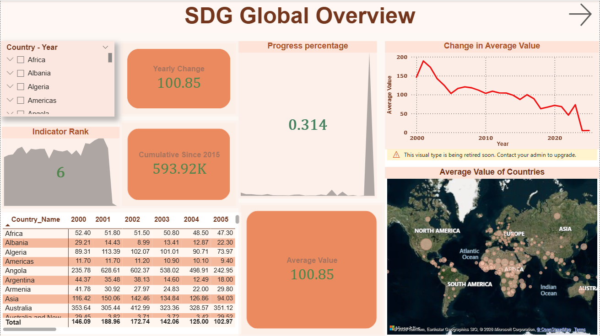
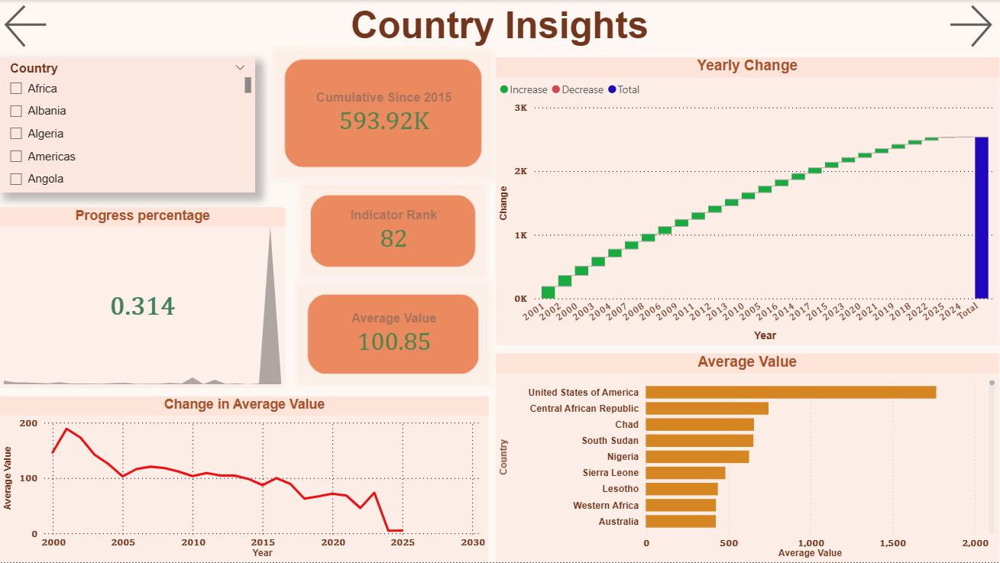
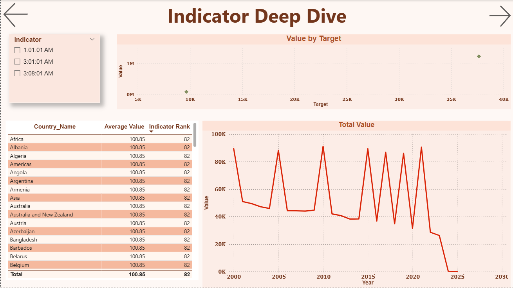
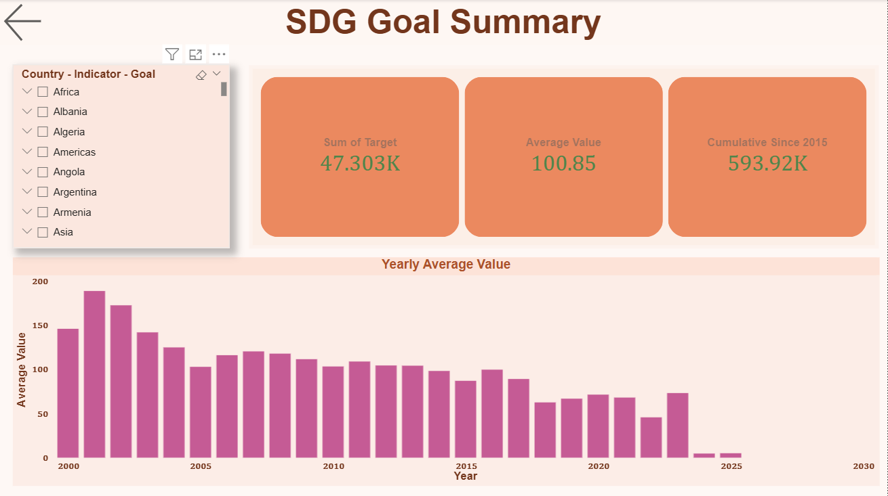

SDG Data Analytics
A global data-driven analysis of Sustainable Development Goals (SDGs), exploring trends in poverty, health, and climate indicators using interactive dashboards.
// Project Overview
This project analyzes global Sustainable Development Goals (SDGs) data obtained from the United Nations SDG Data Repository. Using SQL Server for data cleaning, transformation, and relational modelling, and Power BI for visualization, the team developed interactive dashboards to monitor global progress and identify key development patterns across countries and indicators.
// Key Questions Explored
// Methodology
Collected SDG datasets from the UN SDG Global Database covering multiple indicators and countries since 2000.
Processed raw data in SQL Server by handling missing values, standardizing country names, and ensuring consistency across datasets.
Built a relational model with dimension tables and created DAX measures for KPIs such as averages, country rankings, and trend analysis.
Developed interactive Power BI dashboards with slicers, drill-downs, KPI cards, and visual analytics for exploration.
// Key Insights
// Dashboards



